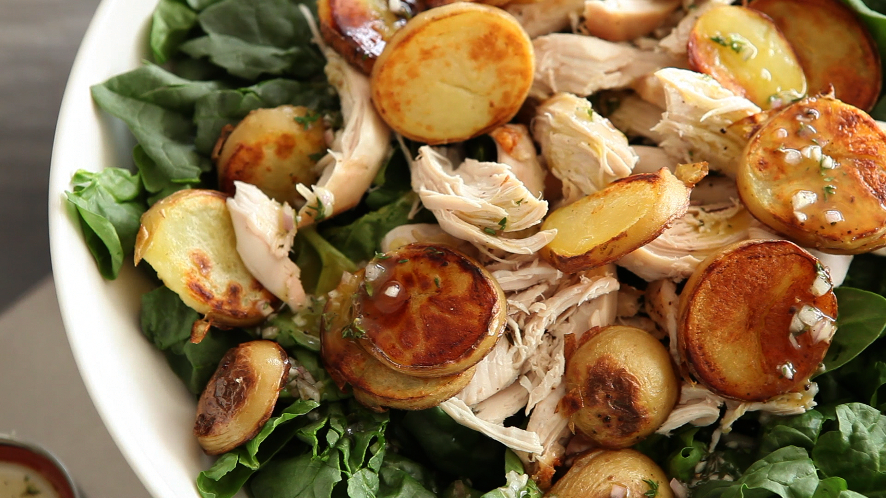

Chicken, spinach and potato salad!

Easy salad
So, this is a quick and filling salad. You make prepare the chicken any way you'd like. I prefer to cut it up, season it,
and stick it in the air fryer. For the potatoes, you can boil, bake, microwave, or air fry them. I use the same seasoning
for everything, Cooking With My Doctor - Adobo. That's all the cooking you need
to do. In fact, you could make a batch of this to eat for lunch for the next couple of days if you wish!
Ingredients
- Ckicken breast
- 3 cups of raw spinach
- Avocado
- 1 potato(any kind)
- Dressing of choice
- Seasoning of choice
Steps
- Toss 1 cut up, seasoned chicken breast in the air fryer for 25 mins
- Cut and cook potato using method of choice
- After both the chicken and potato are done, grab a bowl and toss both in
- Open avocado and cut into cubes, toss into the bowl
- Toss spinach in bowl and mix
- Add dressing of choice, mix, and dig in!